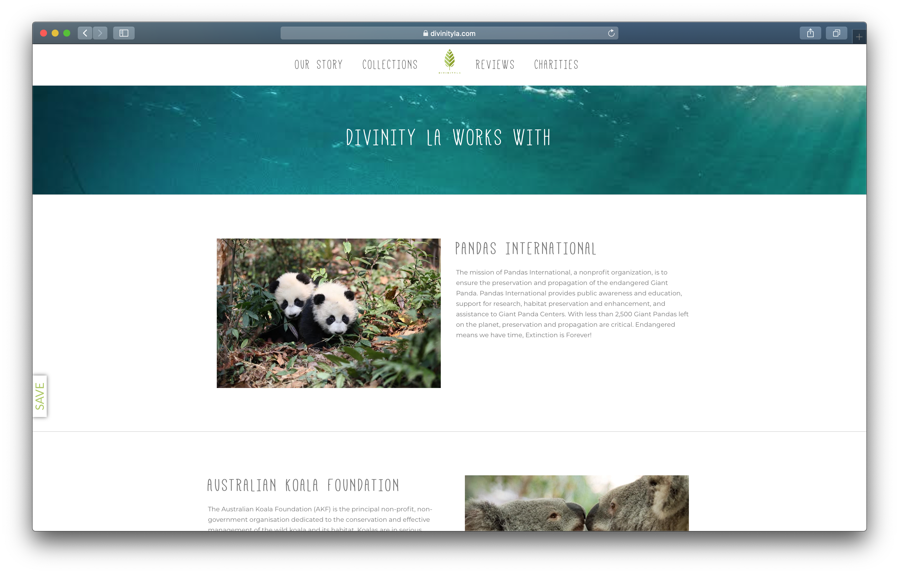
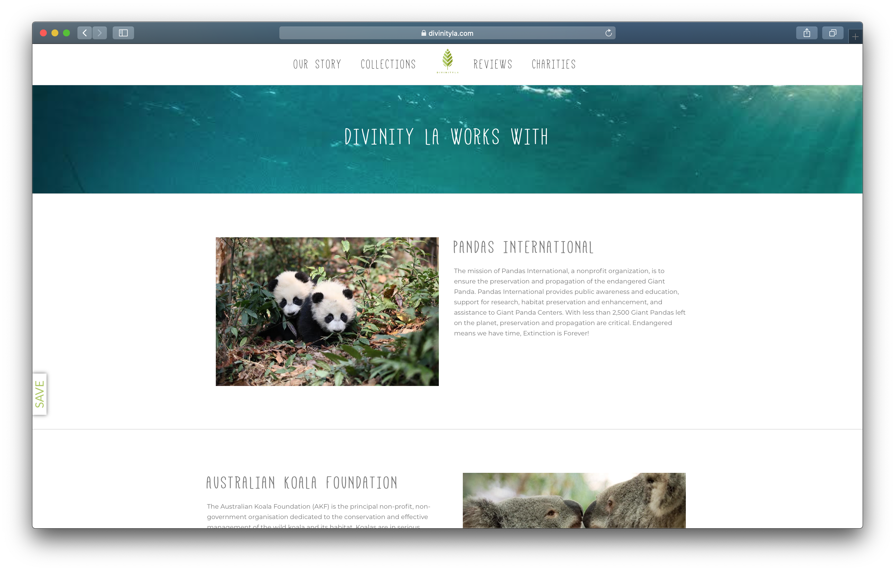
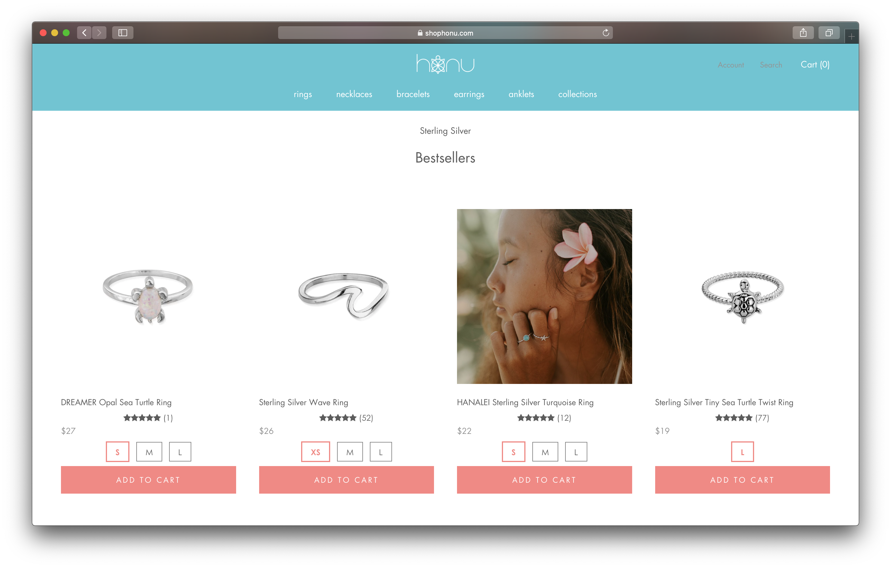
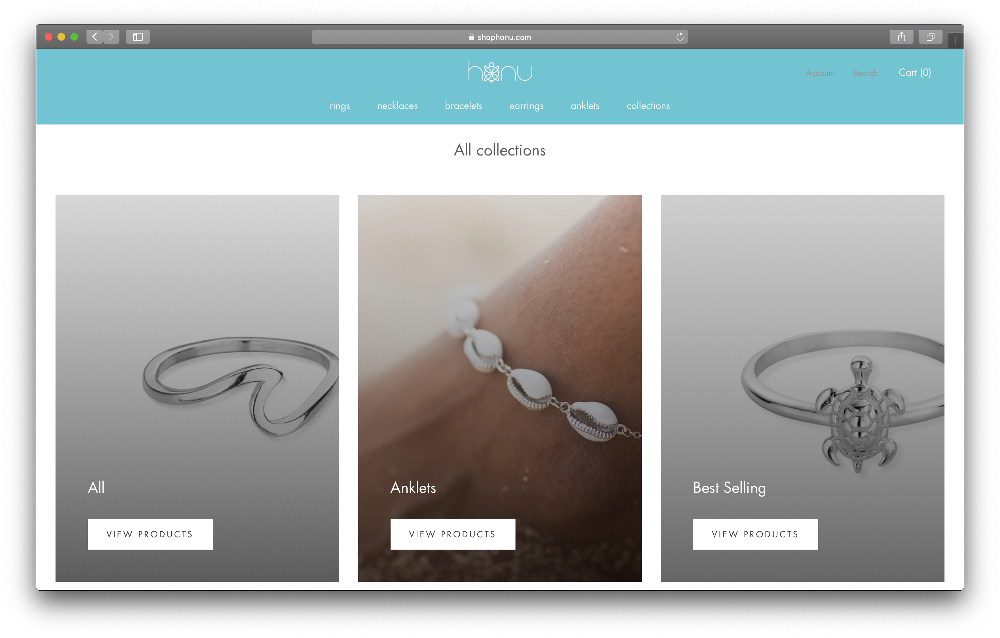
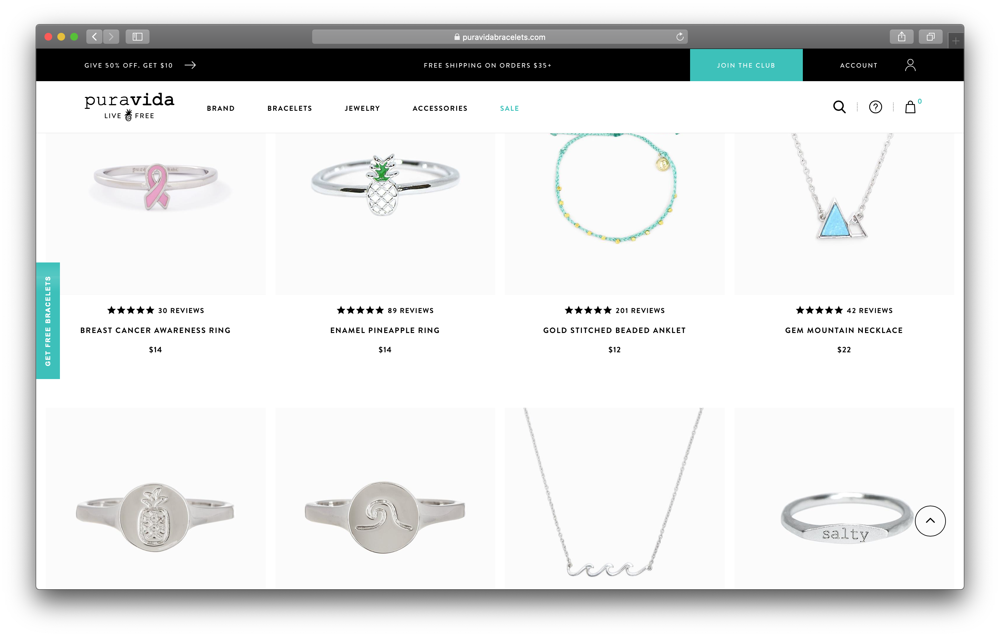
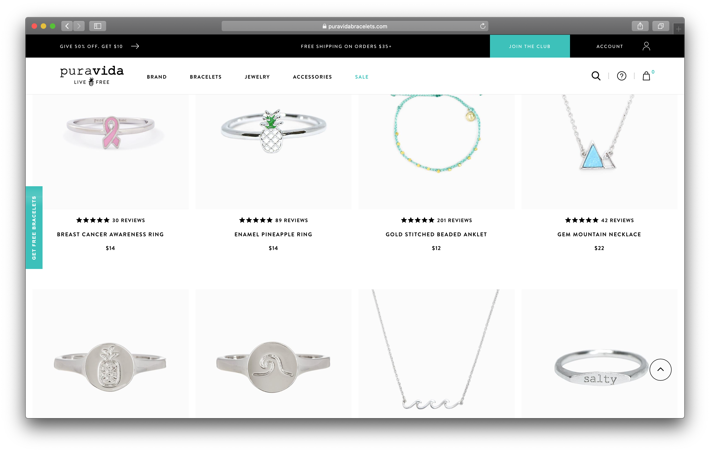

Final project proposal
Introduction
Hana & Mana
In Hawaiian, Hana means "work" and Mana means "where" but when put together, Hana Mana means "miracle." At Hana & Mana, we work and support local artists. With each item sold from our shop, a portion of the net profits go towards the local community and organizations that work to protect marine life. As a team, we strive to incorporate our work ethic with a deeper meaning; we curate jewelry and accessories from ethnically sourced materials and package our products in an eco-friendly and sustainable manner. That's why at Hana & Mana, our motto is "Miracles happen where we work."
Target audience
Those who want to support sustainability efforts can turn to Hana & Mana. We provide jewelry and accessories for everyone of all ages. Whether you are a first-time shopper or a returnee, we hope to create a miraculous experience for all.
By supporting our shop, you'll be benefiting marine life conservation all across the globe. You will be able to give a little of your own Hana Mana into the world and carry a piece of that proof with you forever.
Comparative analysis
Divinity LA
 

Honu
 Pura Vida
 

Website content
Shop
In our shop, you can find jewelry and accessories made by local artisans. Pieces are inspired by Hawaiian culture and carefully crafted with care. With each item purchased, a portion of the net profits go towards the local community and organizations that work to protect marine life.
[Bracelets made by a local artisan]
Collections
Here, you can find our latest collections categorized by jewelry and accessory type. There are also separate collections where those specific items are donated to a particular organization.
[Sea Turtle collection of jewelry and accessories.]
Our Story
In Hawaiian, Hana means "work" and Mana means "where" but when put together, Hana Mana means "miracle." At Hana & Mana, we work and support local artists. With each item sold from our shop, a portion of the net profits go towards the local community and organizations that work to protect marine life. As a team, we strive to incorporate our work ethic with a deeper meaning; we curate jewelry and accessories from ethnically sourced materials and package our products in an eco-friendly and sustainable manner. That's why at Hana & Mana, our motto is "Miracles happen where we work."
[Hana & Mana team working with artisans and local community.]
Journey to Better
Hana & Mana works with many non-profit organizations to help protect marine life. Restoration to marine life globally is just as important as restoration in our local community. Listed below are descriptions of the non-profit organizations we currently work with.
[Photo of Sea Turtle courtesy of Sea Turtle Conservancy.]